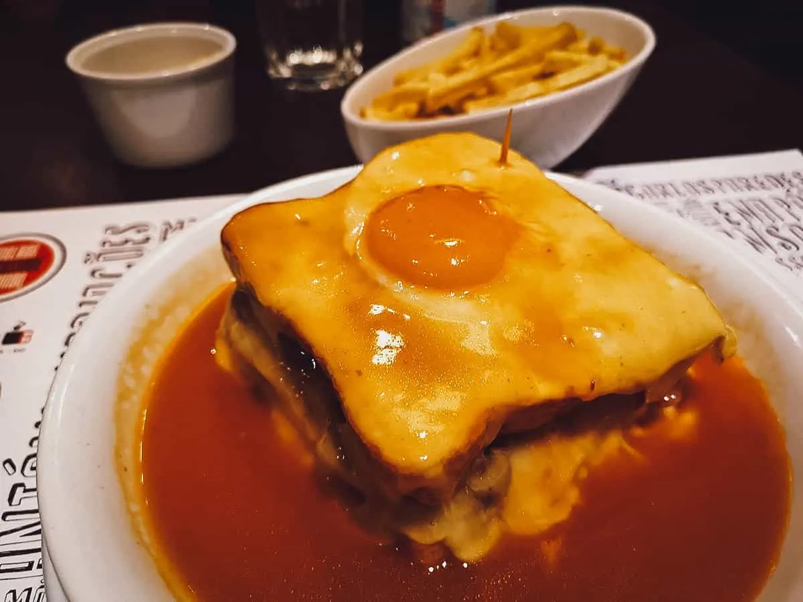

Francesinha Dish

Francesinha, a Portuguese culinary masterpiece,
is a mouthwatering sandwich that's as indulgent as it is flavorful.
Served piping hot, this beloved dish is often accompanied by a side
of crispy French fries, making it a decadent treat for those seeking
a hearty and satisfying culinary experience in Portugal.
Ingredients for the Francesinha
- 2 slices of soft bread
- 1 thin beef steak – tenderized
- 1 pork sausage
- 1 cured pork sausage – linguiça
- 2 slices of ham
- 5 slices of cheese
- 1 egg
Ingredients For the Sauce
- 1tsp olive oil
- 1tbsp lard
- 1 small onion – thinly sliced
- 2 garlic cloves – roughly chopped
- 1 bay leaf
- 1 tin of diced tomatoes
- 400ml beef stock
- 1/2 cup ruby port wine
- 500ml blonde beer
- 1 piri-piri seedless
- 2tbsp Worcester sauce
- Salt
- Black pepper
Instructions
-
Place a medium saucepan over low to medium heat. Once the pan is hot, add the lard, olive oil, garlic, and bay leaf. Let it cook for a minute before adding the onion. Let it simmer for about 8 minutes until the onion turns translucent.
-
Add the tinned tomatoes and the beef stock. Bring it to a boil and let it simmer for about 10 minutes.
-
Add the remaining sauce ingredients: port wine, beer, piri-piri and Worcestershire sauce, cook for another 10 minutes.
-
With a hand mixer, blend everything until smooth. Let the sauce simmer for 30 minutes. The texture should be similar to a gravy, but slightly more liquid.
-
If necessary, add some corn starch or other thickening to your taste. Make sure to dissolve it in cold water before adding to the mixture. Let it cook until it reaches your preferred texture.
-
Season it with salt and black pepper, set it aside.
-
Place a frying pan over high heat. Meanwhile, cut the sausages in half then butterfly-cut them.
-
Fry the sausages in their own fat, then use the remaining fat to fry the steak. Finally, lightly fry the ham slices.
-
Gently toast the bread slices. Start putting the Francesinha together: On a plate, place one bread slice, then a slice of cheese, ham, steak, the sausages, and the final bread slice.
-
Fry the egg, place it on top of the sandwich, cover it with the cheese slices, leaving the egg-yolk visible.
-
Bring the sauce to a boil, then spoon it on top of the sandwich. The hot sauce will melt the cheese. Serve it either with a side of French fries, or surrounded by fries if your plate is big enough!